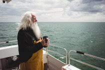

 Founded in 1974, Lighthouse Coffee was the dream of retired fisherman Joe Boggs, who for years brought coffee to his fellow shipmates every morning to ensure a bright start and better chances of a good catch. "Joe's Joe", so beloved for so many years now is sold in our cafe and bakery daily. Ground from fair trade Arabica beans in house. Lighthouse Coffee not only carries on Joe's dream of energizing fisherman here in our coastal town, our fine coffee is available for purchase nationwide since 2015.